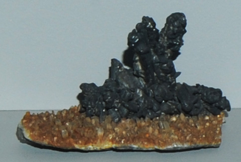

|

| Ag2Te
This sample of hessite on a bed of quartz is displayed in the Smithsonian Museum of Natural History. Hessite is a compound of silver and tellurium with the composition Ag2Te. The sample is about 10x6 cm and is from Botes, Zlatna, Transylvania, Romania.
|